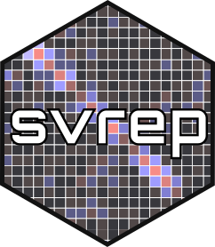

Replicate Design Object for a Two-phase Sample
Source:R/derive_twophase_rep_design.R
derive_twophase_rep_design.RdDerives a replicate design object for a two-phase sample, based on a replicate design object created for the first phase sample. The full-sample and replicate weights are adjusted to implement the reweighted expansion estimator (REE).
Usage
derive_twophase_rep_design(
design,
phase_two_indicators,
phase_two_probs,
phase_two_strata = NULL
)Arguments
- design
A replicate survey design object for the first phase sample.
- phase_two_indicators
A string giving the name of a variable in the data that indicates which cases are selected for the phase two sample.
- phase_two_probs
A string giving the name of a variable in the data that represents the inclusion probabilities for the second-phase sampling.
- phase_two_strata
A string giving the name of the stratification variable for the second phase sample, or
NULL(the default) if the second-phase sampling was not stratified.
Value
A replicate survey design object, containing only the observations from the second phase sample. The full-sample and replicate weights are adjusted using the approach developed by Kim and Yu (2011).
Details
This function adjusts the full-sample and replicate weights so that they correspond
to the reweighted expansion estimator (REE), as described in Kim and Yu (2011).
Note that the REE gives different estimates than the double expansion estimator (DEE),
which is what is implemented by the function survey::twophase().
The REE weights for the second-phase sample are derived in two steps. First, the phase-one weights are divided by the second-phase conditional inclusion probabilities. Next, the resulting weights for the second-phase sample undergo a post-stratification adjustment, where the phase-two sampling strata are the post-strata. This ensures that the weight sums for the second-phase sample in each second-phase stratum match the corresponding weight sums for the entire first-phase sample.
See Kim and Yu (2011) for the underlying theory behind this method. Section 4 of Opsomer et al. (2016) provides a clear summary of the method, in the context of discussing its application to successive difference replication weights.
Opsomer et al. (2016) point out that special care is needed when the second-phase sampling method uses
systematic sampling. In this case, the user should identify any implicit strata created
by the the second-phase systematic sampling. The variable phase_two_strata should
be defined so as to represent the combination of explicit and implicit strata.
If the cube method was used for the second-phase sampling, then this function's approach
to variance estimation will overestimate variance due to second-phase sampling,
unless additional calibration is applied. After calling this function, use the
function calibrate_to_sample() to calibrate the totals for balancing variables.
References
Kim, J. K., and Yu, C. L. (2011), "Replication Variance Estimation under Two-Phase Sampling." Survey Methodology, 37, 67–74. https://www150.statcan.gc.ca/n1/en/pub/12-001-x/2011001/article/11448-eng.pdf
Opsomer, J. D., Jay Breidt, F., White, M., and Li, Y. (2016). "Successive Difference Replication Variance Estimation in Two-Phase Sampling." Journal of Survey Statistics and Methodology, 4(1), 43–70. https://doi.org/10.1093/jssam/smv033
See also
Use calibrate_to_sample() to calibrate the second-phase sample
to match the first-phase sample for specific calibration variables.
The generalized replication functions as_fays_gen_rep_design() and as_gen_boot_design()
can be used to create replicate weights for a two-phase design object created with survey::twophase().
Examples
# Create example data
phase_one_data <- data.frame(
id = c(1, 2, 3, 4, 5, 6, 7, 8),
x = c(109, 95, 86, 102, 106, 105, 106, 115),
y = c(103, 60, 92, 76, 104, 132, 127, 88),
PHASE_ONE_PSU = c(1, 2, 3, 4, 5, 6, 7, 8),
PHASE_ONE_WGT = rep(100, times = 8),
PHASE_TWO_STRATA = rep(c(1,2), each = 4),
PHASE_TWO_PROB = rep(c(0.5, 0.75), each = 4),
PHASE_TWO_SAMPLED = c(TRUE, TRUE, FALSE, FALSE,
TRUE, TRUE, TRUE, FALSE)
)
# Create replicate weights for the first phase
phase_one_design <- svydesign(
data = phase_one_data,
ids = ~ PHASE_ONE_PSU,
weights = ~ PHASE_ONE_WGT
)
phase_one_rep_design <- phase_one_design |>
as.svrepdesign(type = "JK1")
# Derive a replicate design for the two-phase sample
phase_two_rep_design <- derive_twophase_rep_design(
design = phase_one_rep_design,
phase_two_indicators = "PHASE_TWO_SAMPLED",
phase_two_probs = "PHASE_TWO_PROB",
phase_two_strata = "PHASE_TWO_STRATA"
)
#> Warning: Setting `mse` to TRUE; variance estimates will be centered around full-sample estimate, not mean of replicates.
# Check estimates (and standard errors)
svytotal(x = ~ x + y, design = phase_two_rep_design)
#> total SE
#> x 83067 3225.6
#> y 81000 11925.7
svytotal(x = ~ x + y, design = phase_one_rep_design)
#> total SE
#> x 82400 2520.8
#> y 78200 6863.2
# Additional calibration to improve precision
# and align estimates with first-phase sample
# (NOTE: important to correctly specify `control_col_matches`)
calibrated_phase_two_rep_design <- calibrate_to_sample(
primary_rep_design = phase_two_rep_design,
control_rep_design = phase_one_rep_design,
cal_formula = ~ x,
control_col_matches = seq_len(ncol(phase_two_rep_design$repweights))
)